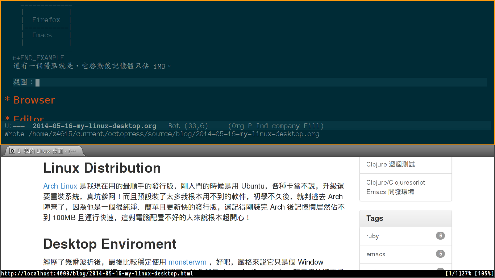

我的 Linux 桌面
Linux Distribution
Arch Linux 是我現在用的最順手的發行版，剛入門的時候是用 Ubuntu ，各種卡當不說，升級還要重裝系統，真坑爹阿！而且預設裝了太多我根本用不到的軟件，初學不久後，就判逃去 Arch 陣營了，因為他是一個很純淨、簡單且更新快的發行版，還記得剛裝完 Arch 後記憶體居然佔不到 100MB 且運行快速，這對電腦配置不好的人來說根本超開心！還有 Arch WiKi 這個查文檔的好東西。
Desktop Enviroment
經歷了幾番波折後，最後比較穩定使用 monsterwm ，好吧，嚴格來說它只是個 Window Manager 只是桌面環境中的一個子功能罷了，特色就是 dynamic tiling window 和只用按鍵來操控視窗，不過這幾乎沒啥用到，最多使用就是快速切一邊瀏覽器一邊編輯器如下圖：
------------- | | | Firefox | |-----------| | Emacs | | | -------------
還有一個優點就是它啟動後記憶體只佔 1MB。
- 實際截圖：

是不是很簡潔阿！沒有一絲多餘的東西。
Browser
Firefox 是我主要使用的瀏覽器，唯一讓我重度使用的原因：Pentadactyl， 簡單來說就是以鍵盤為主來瀏覽網頁！
直接上我使用 Pendatactyl 的影片： Pentadactyl Show
File Manager
Thunar ，只在要整理一些圖片檔的時候才會用到它，其餘的時間都是 shell 下管理的。
Media Player
使用的是 SMPlayer ，這已經滿足我的需求了！
PDF Viewer
zathura 是我常用來閱讀電子書的軟體，有像 Vi-like 的快捷鍵，簡單的 j k 和
space shift-space / 對我而言就很夠用了。
Revision Control
git-cola 是 git 圖形化界面的軟體，我只在觀察別人的 Repo 的 Log 才會使用。
Terminal Emulator
rxvt-unicode 是我主要使用的虛擬終端，看中它有 C-S 架構，開多個比較省資源，稍微配一下顏色，就夠用了。
Office Suite
LibreOffice 用來開 .ppt .doc 的玩意兒，基本上我自己不用它，目前學著用 Latex 或 Org-mode 來取代文檔撰寫和投影片製作。
Summary
絕大部分使用 Linux 時間都在 monsterwm Firefox Emacs Urxvt zathura 下度過，無非就是讀著電子書和放狗和 Stack Overflow 來查查資料，之後就是 Emacs 編程和在 Terminal
裡使用 CLI 的工具，總是搞不懂為啥有人老是說 Linux 的桌面體驗很差？應該還沒到很差的地步吧……雖然遊戲很少就是了。